UD10: SERVICIOS WEB -- AUTENTIFICACIÓN Y SEGURIDAD¶
INTRODUCCIÓN¶
En esta unidad vamos a ver los diferentes métodos de que dispone DRF para proteger el acceso a los endpoints, dependiendo de si el usuario está autenticado o no.
Como introducción general a la autenticación basada en tokens (que es la que vamos a utilizar en servicios REST), puedes consultar este enlace.
En los siguientes apartados veremos una introducción general a las diferentes posibilidades de autenticación que ofrece DRF, verificando las más apropiadas para nuestro caso, e implementaremos la autenticación y protección de las vistas para el caso del portfolio, utilizando el paquete Djoser.
EVALUACIÓN¶
El presente documento, junto con sus correspondiente boletín de actividades (publicado adicionalmente), cubren los siguientes criterios de evaluación:
| RESULTADOS DE APRENDIZAJE | CRITERIOS DE EVALUACIÓN |
|---|---|
| RA4. Desarrolla aplicaciones Web embebidas en lenguajes de marcas analizando e incorporando funcionalidades según especificaciones. | d) Se han identificado y caracterizado los mecanismos disponibles para la autentificación de usuarios. e) Se han escrito aplicaciones que integren mecanismos de autentificación de usuarios. |
| RA7. Desarrolla servicios web reutilizables y accesibles mediante protocolos web, verificando su funcionamiento. | g) Se ha consumido el servicio web. |
GESTIÓN DE ESTADO¶
Retomemos la discusión del punto 3 de la UD4. En esta unidad desglosamos el uso de las cookies, basándonos en el Modelo-Vista-Controlador. La situación que se nos presenta en el uso de servicios REST, es que un mismo servicio web puede ser utilizado por una aplicación web, una aplicación nativa, una aplicación de escritorio, o incluso otro sistema backend. En este caso, es imposible almacenar ningún tipo de estado para el navegador que realiza las peticiones (lo que sí se podía hacer en MVC mediante sesiones). Por tanto, se ha de redefinir la mecánica con la que hemos de trabajar.
Para tener una idea de las diferencias entre mantenimiento del estado con MVC y Servicios REST, podemos analizar la comparación de este enlace, que revisamos en clase.
DRF - AUTENTIFICACIÓN¶
Toda la documentación sobre autentificación y seguridad en DRF la encontrarás en este enlace.
DRF ofrece varios tipos de esquemas de autentificación:
- Basic: basada en usuario/password, recomendada solo para entornos de pruebas.
- Token: autentificación basada en token, apta para casos en los que la capa de cliente está totalmente separada de la capa servidor (aplicaciones SPA, móviles, desktop ...)
- Session: este esquema utiliza el backend de autentificación por sesión por defecto de Django. Es apto para aplicaciones desarrolladas con el modelo vista-controlador, con la utilización de AJAX o Vue, para dotar de reactividad a la aplicación.
- Remota: se delega la autentificación en el servidor web.
- Custom: adaptación de la autentificación base, mediante la extensión de la clase BaseAuthenticacion.
Vistos estos esquemas de autentificación, DRF permite utilizar varios de ellos, mediante la utilización del array DEFAULT_AUTHENTICATION_CLASSES, dentro del diccionario REST_FRAMEWORK, según el siguiente ejemplo:
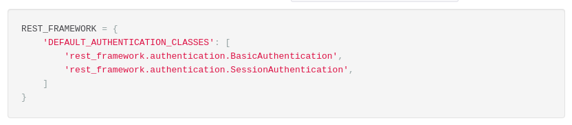
O también se puede especificar en la propia vista (ha de heredar de APIView), mediante la lista authentication_classes.
En caso de que un request no pase las validaciones de seguridad, se pueden devolver dos posibles respuestas:
- Error HTTP 401 Unauthorized.
- Error HTTP 403 Permission Denied.
DRF - PERMISOS¶
La documenación sobre permisos en DRF la encontrarás en este enlace.
Los permisos en DRF determinan si a un determinado request se le concede acceso a los recursos solicitados, y se aplican antes de la lógica de una determinada vista.
Estos permisos se pueden aplicar tanto al nivel de vista, como a nivel de objeto. Esto permite que determinados usuarios tengan acceso a unos objetos pertenecientes a un modelo, y no a otros objetos de ese mismo modelo. El método a sobreescribir para poder realizar esto se llama get_object().
En muchas ocasiones, nos convendrá sobreescribir los métodos get_queryset, perform_create, perform_update, perform_delete ..., en lugar de utilizar permisos a nivel de objeto (lo cual introduciría un retardo adicional en la lógica de procesamiento).
Aunque podemos determinar la política de permisos a nivel global mediante la lista DEFAULT_PERMISSION_CLASSES del diccionario REST_FRAMEWORK, es más recomendable implementarlo a nivel de cada una de las vistas de nuestra aplicación. Un ejemplo de configuración global:
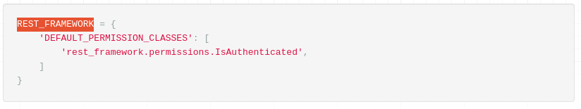
En este enlace encontramos la lista de permisos estándar de DRF.
De especial interés son los permisos personalizados de DRF, mediante los cuales podemos implementar la lógica de permisos adecuada según los requerimientos de nuestra aplicación. Imaginemos que hemos creado un modelo de perfiles de usuarios (administrador, profesor, alumnado ...), a cada uno de los cuales le queremos conceder diferentes grupos de privilegios en nuestra aplicación.
Para ello, nos basaremos en la clase BasePermission y sobreescribiremos los métodos (uno, o ambos) has_permission y/o has_object_permission, como se detalla en este enlace.
PAQUETES DJANGO¶
En este enlace encontramos todas las extensiones de Django que nos permiten implementar los mecanismos de autentificación y seguridad.
Los más relevantes, destacados en la documentación de DRF son:
- djando-rest-knox
- Django OAuth Toolkit
- Django Rest framework OAuth
- JSON Web Token Authentication
- Djoser
En el siguiente apartado analizaremos con más profundidad las ventajas que nos ofrece utilizar el paquete Djoser, y lo utilizaremos para implementar varios aspectos de autentificación y seguridad en el proyecto de portfolio.
DJOSER Y SIMPLE JWT¶
En este apartado vamos a ver diferentes aspectos de Djoser, que nos proporciona varias opciones interesantes:
- Por una parte, utiliza autentificación (por token o por social) mediante otros paquetes.
- Por otra parte, nos proporciona de serie un conjunto de vistas para gestionar toda la operativa habitual de un usuario (alta, login, logout, cambio de password, etc.), incluso con un modelo de usuario modificado (que es nuestro caso).
En los siguientes subapartados vamos a realizar la configuración de este paquete y vamos a utilizar algunas de sus vistas.
Instalación¶
Sigue la guía de instalación de este enlace. Instala el paquete djangorestframework_simplejwt, NO social-auth-app-django, ya que vamos a utilizar autentificación por token JWT.
También configura todo lo necesario para el backend de autentificación de JWT, según este enlace. Vamos a dejar el diccionario SIMPLE_JWT del siguiente modo (en settings.py):
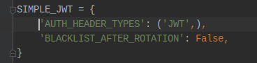
NOTA: prefijamos las URLs de Djoser con "api", del siguiente modo:
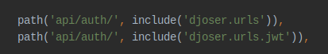
Vamos a realizar algunas de las pruebas que se detallan en la documentación de Djoser, con curl (también se pueden llevar a cabo con el API navegable de DRF).
Primero vamos a obtener un token a partir de nuestro usuario/contraseña, mediante la siguiente instrucción (cambia el usuario y contraseña según la configuración de tu usuario):
curl -X POST http://localhost/api/auth/jwt/create/ --data 'username=admin&password=admin'
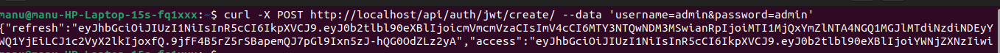
NOTA: Como estamos utilizando JWT, hemos de utilizar el endpoint localhost/api/auth/jwt/create, según la lista de endpoints de JWT.
Esta instrucción nos ha devuelto dos cosas:
- El token de acceso, que tendremos que enviar a todos los endpoints con vistas protegidas.
- El token de refresco, a utilizar cuando se caduque el token de autentificación.
¿Cuál es la duración del token de acceso? ¿la podemos modificar? La respuesta es: sí, podemos modificar la duración del token de acceso, con la directiva ACCESS_TOKEN_LIFETIME, según la documentación del paquete Simple JWT. Su valor por defecto es de 5 minutos, como se detalla en dicha documentación.
Una vez obtenidos estos dos tokens, podemos verificar si el token de acceso sigue siendo válido, mediante la siguiente instrucción:
curl -X POST http://localhost/api/auth/jwt/verify/ --data 'token=[token]'
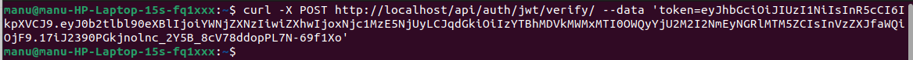
Como el token aún no ha caducado, no se obtiene ninguna respuesta. Si esperamos unos minutos y volvemos a intentarlo, veremos que se indica que el token ya no es válido:
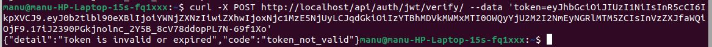
Podemos probarlo igualmente con el API navegable de DRF:
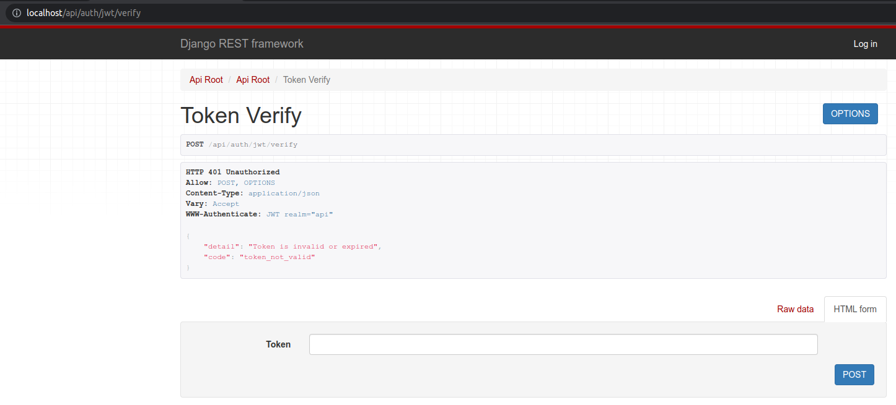
Para refrescar un token de acceso una vez caducado, utilizamos el token de refresco, mediante el endpoint http://localhost/api/auth/jwt/refresh, como se muestra a continuación:
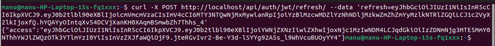
También lo podemos hacer en el API navegable:
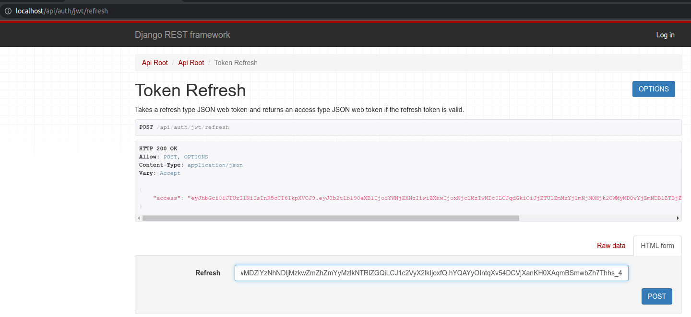
Ahora, con este token de acceso podemos recuperar los datos del usuario al que pertenece el token, mediante la instrucción:
curl -LX GET http://localhost/api/auth/users/me/ -H 'Authorization: JWT [access_token]'
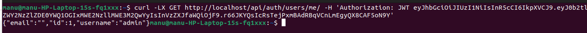
NOTA: El texto "JWT" que precede al token de acceso en la instrucción anterior viene del parámetro de configuración AUTH_HEADER_TYPES, del diccionario SIMPLE_JWT (en settings.py).
En el frontend, deberíamos almacenar estos tokens en cookies del navegador. En cada petición HTTP en los que necesitemos autorización, se necesita realizar los siguientes pasos:
- Verificar que el token de acceso sigue siendo válido.
- Refrescar el token de acceso si está caducado, mediante el token de refresco.
- Realizar la petición HTTP con un token de acceso válido.
Parámetros de configuración¶
Por una parte tenemos la configuración de Simple JWT, que ya hemos mencionado en el apartado anterior. Revisamos las principales opciones de configuración.
Por otra parte, la documentación de Djoser nos permite ver cómo cambiar los valores predeterminados, en su documentación. Los revisamos también durante la clase.
Autentificación con JWT¶
Vamos, en este punto, a modificar las vistas de nuestro proyecto de portfolio para que solo los usuarios autenticados puedan acceder a las operaciones CRUD de nuestros modelos.
Las vistas que necesitamos securizar son las siguientes:
- CategoriaCRUDViewSet
- CategoriaCreateRetrieveUpdateViewSet
- ProyectoCRUDViewSet
- CapitalizeCategoriaView
- capitalize_categoria_view
Las cuatro primeras son vistas basadas en clase, con lo cual solo necesitamos añadir el siguiente atributo a la vista:
permission_classes = [IsAuthenticated]
from rest_framework.permissions import IsAuthenticated
from rest_framework.decorators import api_view, permission_classes
# Código
@api_view(['GET'])
@permission_classes([IsAuthenticated])
def capitalize_categoria_view(request):
# Código
Si intentamos acceder a la lista de categorías con el API navegable veremos que no hay problema en recuperar los valores (fíjate en el valor de "Php"):
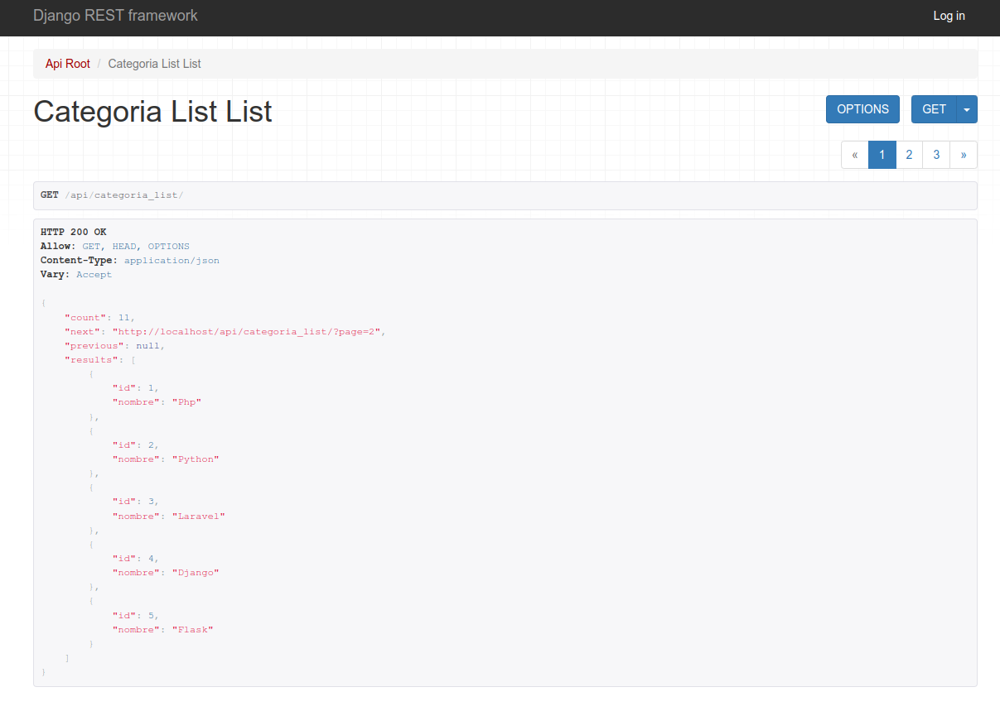
Pero si intentamos acceder a cualquier operación CRUD de las categorías, obtendremos un error de permisos:
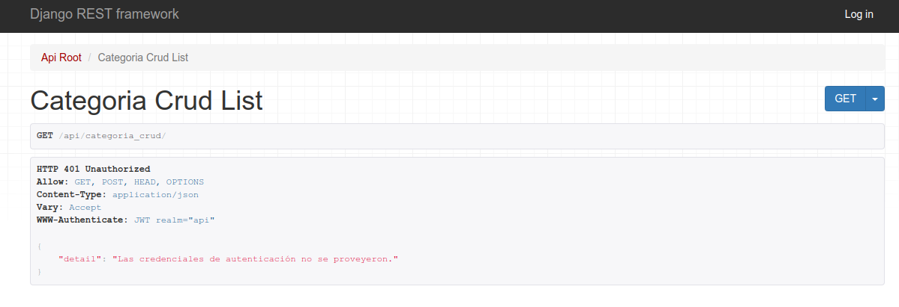
Podríamos pensar en introducir nuestras credenciales mediante la opción "Log in" del API navegable, pero no se van a aceptar nuestras credenciales porque la opción de configuración DEFAULT_AUTHENTICATION_CLASSES solo recoge JWTAuthentication, como método de autenticación.
Por tanto, a partir de ahora, tendremos que utilizar algún tipo de cliente (curl, por ejemplo) para poder testear los servicios protegidos, enviando el token de acceso cada vez que queramos realizar alguna operación protegida.
Por ejemplo, vamos a actualizar una de las categorías mediante curl, enviando el token de acceso, mediante una instrucción similar a la siguiente:
curl -LX PUT http://localhost/api/categoria_crud/1/ -H 'Authorization: JWT [TOKEN ACCESO]' -d "nombre=PHP"
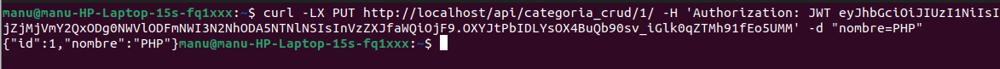
Si consultamos de nuevo la lista de categorías, veremos que PHP se muestra en mayúsculas:
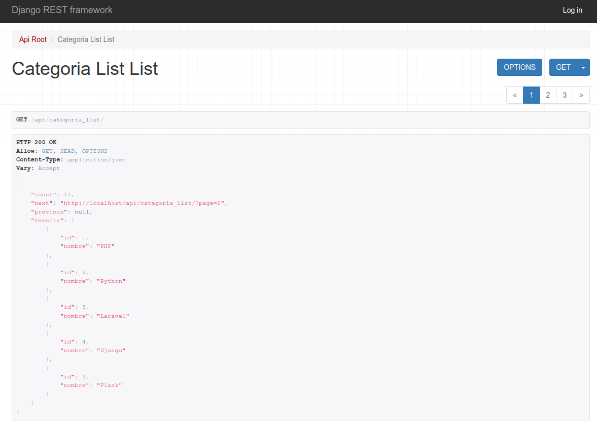
Endpoints¶
Aunque estos dos paquetes nos ofrecen muchos endpoints para implementar diferentes funcionalidades, para una aplicación web típica basada en servicios REST (una SPA, por ejemplo), utilizaríamos como mínimo los siguientes endpoints de Djoser y Simple JWT:
Djoser:
Simple JWT: